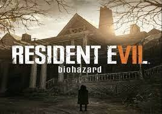
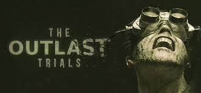
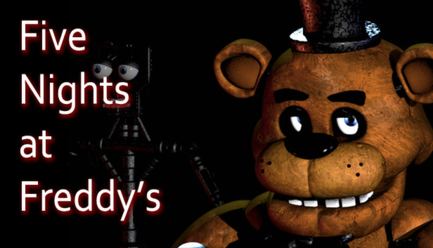

GryPC.PL
GryPC.PL
Horror games
horror to odmiana fantastyki polegająca na budowaniu świata przedstawionego na wzór rzeczywistości i praw nią rządzących po to, aby wprowadzić w jego obręb zjawiska kwestionujące te prawa i nie dające się wytłumaczyć bez odwoływania się do zjawisk nadprzyrodzonych. Źródła takiego postrzegania horroru związane są bezpośrednio z samym powstaniem literackiego gatunku horroru i zasadniczo do niego się odnoszą.
Pare przykładów:

"Resident Evil 7: Biohazard" to gra survival horror z 2017 roku opracowana i opublikowana przez Capcom. Dziewiąta główna część serii Resident Evil, "Resident Evil 7" odbiega od bardziej zorientowanych na akcję "Resident Evil 5" i "Resident Evil 6", powracając do korzeni survival horroru, kładąc nacisk na eksplorację. Gracz kontroluje Ethana Wintersa, który szuka swojej żony na opuszczonej plantacji zajmowanej przez zarażoną rodzinę, rozwiązując zagadki i walcząc z wrogami. Jest to pierwsza główna gra z serii, w której zastosowano widok pierwszoosobowy.
"Resident Evil 7" to pierwsza pełnometrażowa gra korzystająca z wewnętrznego silnika RE Engine firmy Capcom. Opracowaniem kierował Koshi Nakanishi, dyrektor "Resident Evil: Revelations" na Nintendo 3DS z 2012 roku. Rok przed ogłoszeniem na targach E3 2016 zostało zaprezentowane jako demo wirtualnej rzeczywistości o nazwie Kitchen. Zespół czerpał inspirację z filmu Martwe zło z 1981 roku, przeskalował grę do jednego miejsca i wykorzystał perspektywę pierwszoosobową, aby zanurzyć graczy. Wydano dwa scenariusze zawartości do pobrania: Not a Hero i End of Zoe.
"Resident Evil 7" został wydany w styczniu 2017 na Microsoft Windows, PlayStation 4, Xbox One oraz w maju 2018 na Nintendo Switch w Japonii. Obsługuje również zestaw słuchawkowy PlayStation VR. Gra została uznana za powrót do formy dla serii. krytycy chwalili rozgrywkę, innowacje i zastosowania wirtualnej rzeczywistości, ale bitwy z bossami, ostatni rozdział i użycie widoku pierwszoosobowego spotkały się z bardziej polaryzującym przyjęciem. Od grudnia 2020 roku gra sprzedała się w 8,5 miliona egzemplarzy na całym świecie. Był nominowany do kilku wyróżnień na koniec roku. Kontynuacja, "Resident Evil Village", zaplanowana jest na 2021 rok.
"Resident Evil 7" to pierwsza pełnometrażowa gra korzystająca z wewnętrznego silnika RE Engine firmy Capcom. Opracowaniem kierował Koshi Nakanishi, dyrektor "Resident Evil: Revelations" na Nintendo 3DS z 2012 roku. Rok przed ogłoszeniem na targach E3 2016 zostało zaprezentowane jako demo wirtualnej rzeczywistości o nazwie Kitchen. Zespół czerpał inspirację z filmu Martwe zło z 1981 roku, przeskalował grę do jednego miejsca i wykorzystał perspektywę pierwszoosobową, aby zanurzyć graczy. Wydano dwa scenariusze zawartości do pobrania: Not a Hero i End of Zoe.
"Resident Evil 7" został wydany w styczniu 2017 na Microsoft Windows, PlayStation 4, Xbox One oraz w maju 2018 na Nintendo Switch w Japonii. Obsługuje również zestaw słuchawkowy PlayStation VR. Gra została uznana za powrót do formy dla serii. krytycy chwalili rozgrywkę, innowacje i zastosowania wirtualnej rzeczywistości, ale bitwy z bossami, ostatni rozdział i użycie widoku pierwszoosobowego spotkały się z bardziej polaryzującym przyjęciem. Od grudnia 2020 roku gra sprzedała się w 8,5 miliona egzemplarzy na całym świecie. Był nominowany do kilku wyróżnień na koniec roku. Kontynuacja, "Resident Evil Village", zaplanowana jest na 2021 rok.

"Outlast" to gra komputerowa z gatunku survival horror przedstawiona w perspektywie pierwszoosobowej, stworzona i wydana przez kanadyjskie studio Red Barrels. Światowa premiera odbyła się 4 września 2013 roku.
W październiku 2014 jeden z pracowników wówczas dwunastoosobowego studia Red Barrels potwierdził rozpoczęcie prac nad sequelem noszącym tytuł "Outlast 2".
Świat przedstawiono z perspektywy pierwszoosobowej. Głównym bohaterem jest reporter Miles Upshur. Odwiedza on szpital psychiatryczny o nazwie „Mount Massive Asylum” w Kolorado, przez długi czas opuszczony i ponownie otwarty w 2009 roku. W przypadku konfrontacji z wrogiem bohater jest bezbronny. Widoczność w ciemnych miejscach możliwa jest dzięki kamerze z noktowizorem, w której baterie ulegają wyczerpaniu. O fabule gracz dowiaduje się ze znajdowanych notatek i dokumentów, napotyka ciała pracowników i pacjentów, jednak ci pozostali przy życiu są obłąkani i nie mogą służyć pomocą w kwestii fabuły. W grze występuje duża ilość scen gore. Ze względu na brak broni rozgrywka sprowadza się głównie do ucieczki i ukrywania się, niekiedy odnajdywania przełączników, kluczy czy kart dostępu.
W październiku 2014 jeden z pracowników wówczas dwunastoosobowego studia Red Barrels potwierdził rozpoczęcie prac nad sequelem noszącym tytuł "Outlast 2".
Świat przedstawiono z perspektywy pierwszoosobowej. Głównym bohaterem jest reporter Miles Upshur. Odwiedza on szpital psychiatryczny o nazwie „Mount Massive Asylum” w Kolorado, przez długi czas opuszczony i ponownie otwarty w 2009 roku. W przypadku konfrontacji z wrogiem bohater jest bezbronny. Widoczność w ciemnych miejscach możliwa jest dzięki kamerze z noktowizorem, w której baterie ulegają wyczerpaniu. O fabule gracz dowiaduje się ze znajdowanych notatek i dokumentów, napotyka ciała pracowników i pacjentów, jednak ci pozostali przy życiu są obłąkani i nie mogą służyć pomocą w kwestii fabuły. W grze występuje duża ilość scen gore. Ze względu na brak broni rozgrywka sprowadza się głównie do ucieczki i ukrywania się, niekiedy odnajdywania przełączników, kluczy czy kart dostępu.

"Five Nights at Freddy’s" to seria niezależnych gier komputerowych będących połączeniem gatunków gier przygodowych typu „wskaż i kliknij” oraz survival horroru. Została stworzona i wydana przez Scotta Cawthona na platformy Microsoft Windows, iOS, Android, Nintendo Switch, PlayStation 4 oraz Xbox One.
Na serię składa się jedenaście gier komputerowych. W dwóch pierwszych, gracz wciela się w nocnego stróża w pizzerii „Freddy Fazbear’s Pizza” starającego się przetrwać noc i ustrzec się przed tzw. „animatronikami”. W trzeciej części akcja rozgrywa się trzydzieści lat później po zamknięciu restauracji – nowi właściciele otwierają „dom strachów”, nawiązujący do pizzerii. Akcja czwartej została umiejscowiona w domu, w którym gracz jest nękany przez koszmarne wersje animatroników. W części piątej, zatytułowanej Sister Location, gracz wciela się w rolę technika w nowym lokalu. FNaF World, będącą spin-offem serii, zrealizowano jako komputerową grę fabularną, a samą konwencję zmieniono na bajkową – gra jest skierowana przede wszystkim do młodszych dzieci. Ze względu na liczne błędy, niestabilność gry oraz wiele negatywnych opinii twórca zdecydował się wycofać ją z platformy Steam. Kolejna część serii, zatytułowana Freddy Fazbear’s Pizzeria Simulator, została wydana w 2017 roku. 27 czerwca 2018 wydano spin-off zatytułowany Ultimate Custom Night. Five Nights at Freddy’s VR: Help Wanted, wydana 28 maja 2019, przenosi znane już z wcześniejszych odsłon serii tryby do wirtualnej rzeczywistości oraz prezentuje kilka własnych elementów dostosowanych pod VR. 29 listopada 2019 pierwsze trzy części serii zostały wydane na konsolę Nintendo Switch. 25 listopada tego samego roku opublikowana została gra wykorzystująca rzeczywistość rozszerzoną – Five Nights at Freddy’s AR: Special Delivery.
We wrześniu 2020 roku zapowiedziano następną część cyklu – Five Nights at Freddy’s: Security Breach. W zwiastunie pokazano budynek przypominający galerię handlową.
Na serię składa się jedenaście gier komputerowych. W dwóch pierwszych, gracz wciela się w nocnego stróża w pizzerii „Freddy Fazbear’s Pizza” starającego się przetrwać noc i ustrzec się przed tzw. „animatronikami”. W trzeciej części akcja rozgrywa się trzydzieści lat później po zamknięciu restauracji – nowi właściciele otwierają „dom strachów”, nawiązujący do pizzerii. Akcja czwartej została umiejscowiona w domu, w którym gracz jest nękany przez koszmarne wersje animatroników. W części piątej, zatytułowanej Sister Location, gracz wciela się w rolę technika w nowym lokalu. FNaF World, będącą spin-offem serii, zrealizowano jako komputerową grę fabularną, a samą konwencję zmieniono na bajkową – gra jest skierowana przede wszystkim do młodszych dzieci. Ze względu na liczne błędy, niestabilność gry oraz wiele negatywnych opinii twórca zdecydował się wycofać ją z platformy Steam. Kolejna część serii, zatytułowana Freddy Fazbear’s Pizzeria Simulator, została wydana w 2017 roku. 27 czerwca 2018 wydano spin-off zatytułowany Ultimate Custom Night. Five Nights at Freddy’s VR: Help Wanted, wydana 28 maja 2019, przenosi znane już z wcześniejszych odsłon serii tryby do wirtualnej rzeczywistości oraz prezentuje kilka własnych elementów dostosowanych pod VR. 29 listopada 2019 pierwsze trzy części serii zostały wydane na konsolę Nintendo Switch. 25 listopada tego samego roku opublikowana została gra wykorzystująca rzeczywistość rozszerzoną – Five Nights at Freddy’s AR: Special Delivery.
We wrześniu 2020 roku zapowiedziano następną część cyklu – Five Nights at Freddy’s: Security Breach. W zwiastunie pokazano budynek przypominający galerię handlową.